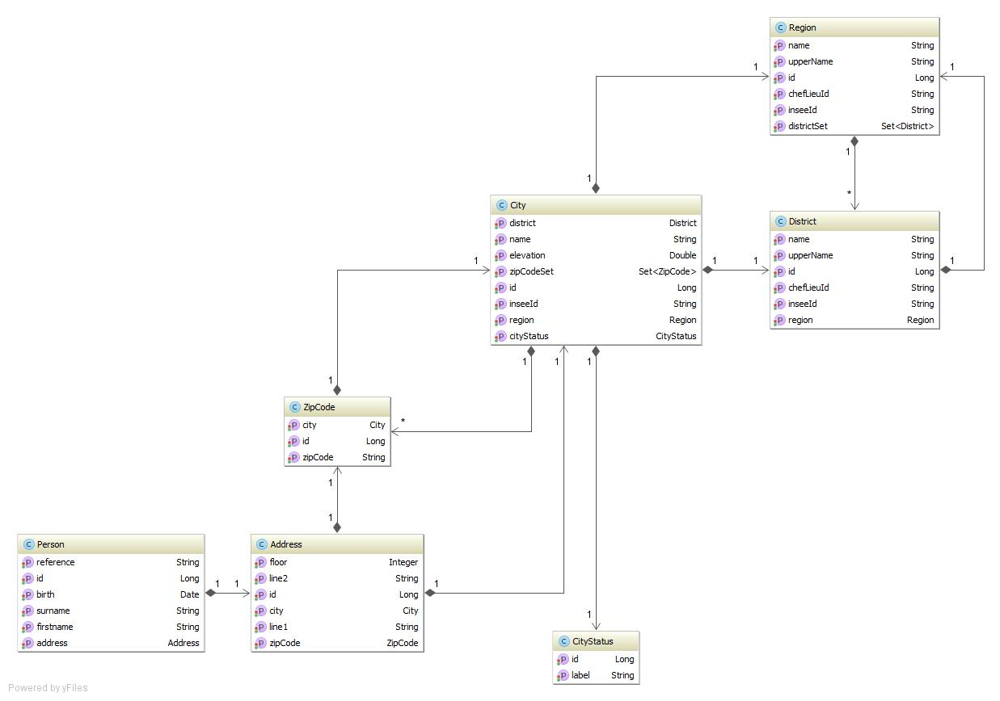

Au cours de ce TD, vous aurez a mettre en place une API depuis notre base de donnée vers l'application d'un client qui l'interrogera via des appels REST. Il a des demandes précise en ce qui concerne l'acces aux ressources et au différents code attendus.
Voici les beans que le client souhaite consulter, cependant, nous ne souhaitons pas partager les nos bean (entités) avec lui et il serait préférable que nous puissions lui envoyer un jar indépendant contenant les structure java, faites le necessaire pour que cela soit possible.

Ouvrez le module 31-jaxrs-td1, vous trouverez la structure de base du projet, ainsi que un service developpé par un prestataire.
Le client nous a envoyé ses spécifications.
Pour plus de facilité de lecture, nous noterons [host] l'url de base d'acces au serveur, dans le cas de ce projet sur vos poste, cela sera http://localhost:8080/contact
Concernant les formats
Le format JSON est le format par défaut, cependant, il faut que celle-ci soit accessible au format XML.
API d'exposition des donnée géographique
Le client souhaite acceder en lecture seule à notre base de donnée concernant les département et les villes, pour cela nos groupes d'analyste ont proposé plusieurs URL.
Tout d'abord l'URL de base de l'API REST que nous exposons doit être [host]/api.
Départements
Le client doit pouvoir recuperer la liste des départements (numero INSEE, nom) via un appel à cet type d'URL : [host]/api/district
Le client doit pouvoir acceder un département de maniere individuelle (numero INSEE, nom, Nom du chef lieu) via son numero INSSE directement dans l'URL : [host]/api/district/[INSEE]
Villes
De la même manière que pour les départements, notre client souhaite accéder à la liste des villes (nom, status, numero insee), mais souhaite également restreindre de fait la liste à un département. Pour cela, nous mettrons à disposition cette URL : [host]/city/[INSEE Departement]/ et nous ne mettrons pas d’acces complet à la liste des villes.
De même, le client souhaite accéder au détails de chaque ville (nom, status, altitude, liste des code postaux), pour cela il devra utiliser cet URL : [host]/city/[INSEE Departement]/[INSEE Ville]/
Les codes retour pour l'API géographique
- Ils doivent suivr les spécification HTTP
200 : Succes404 : ressource géographique non trouvée
API d'exposition des personnes
Le client souhaite une API CRUD pour la gestion des personnes, avec comme URL de base [host]/api/person
Cette API CRUD-List presentera ces URLs
- Affichage de la liste des personnes :
[host]/api/person - id, prenom, nom
- Affichage du détail d'une personne :
[host]/api/person/[Id de la personne]/
- Création d'une personne :
[host]/api/person, avec les champs suivant :
- Nom
- Prenom
- ligne 1 de l'adresse
- code postal
Et le retour devra renvoyer l'URL d'acces à la personne. Si le code postal n'existe pas, le service devra renvoyer une erreur 450.
- Modification d'une personne par l'URL
[host]/api/person/[Id de la personne]/, avec modification seulement des champs suivant :
une non cohérence entre l'id fournie dans l'URL et l'id contenu dans les données devra renvoyer une erreur 480. De plus, cette méthode acceptera des données aux format JSON ou XML.
- Suppression d'une personne par l'URL
[host]/api/person/[Id de la personne]/